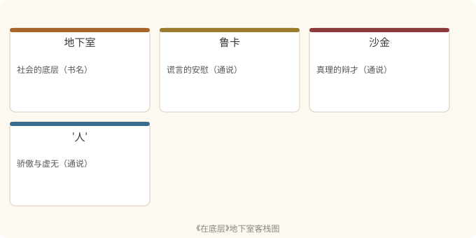

在底层
一、基本信息
| 作者 | 马克西姆·高尔基 |
|---|---|
| 成书/出版 | 1902年（作者页注记：Britannica——The Lower Depths (1902)） Maxim Gorky — Encyclopaedia Britannica（百科全书） |
| 国别/地区 | 俄国 |
| 时代 | 近代 · 20世纪初 |
| 体裁 | 戏剧 |
| 语言 | 俄语 |

《在底层》地下室客栈图（主题·结构图）
二、创作背景
作者页注记：在底层——'戏剧（Britannica：The Lower Depths (1902)）'。
Britannica：高尔基——俄国作家、'社会主义现实主义'命名者（作者页语境——待核）。
题材（通说待核）：科斯蒂廖夫的地下室客栈——流浪汉们的'人'之辩论。
三、内容脉络
（通说待核）鲁卡的出现：谎言的安慰与真相的残忍。
（通说待核）'人——这声音听起来多么骄傲'（通说待核——不直接引文）。
四、主要人物表
| 人物 | 身份 | 说明 |
|---|---|---|
| 鲁卡 | 流浪朝圣者 | （通说待核，Britannica未载） |
| 沙金 | 赌徒 | （通说待核） |
五、主题与艺术特点
- 安慰性的谎言 vs 残酷的真理（通说待核）。
- '底层'的社会档案（书名语境）。
- '人'的颂歌与虚无（通说待核）。
六、影响与评论
- Britannica：The Lower Depths (1902)（作者页注记）。
Maxim Gorky — Encyclopaedia Britannica（百科全书） - Britannica：高尔基戏剧序列（作者页语境）。
Maxim Gorky — Encyclopaedia Britannica（百科全书）
七、阅读建议
难点
- 群像戏的'潜台词'。
- 1902年俄国社会语境。
- 《在底层》中译本（人民文学等——通说待核）。
- 俄文原版（公有领域）。
高尔基戏剧首选；与《母亲》对读。
八、待核实
- 鲁卡/沙金人名核对（通说）。
- 1902年首演（莫斯科艺术剧院说）待核。
- '人'的台词核对（不采为引文）。